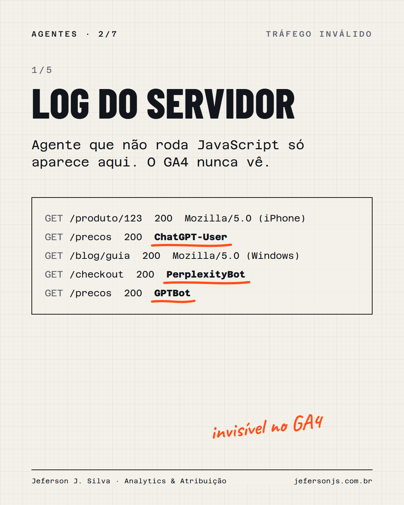
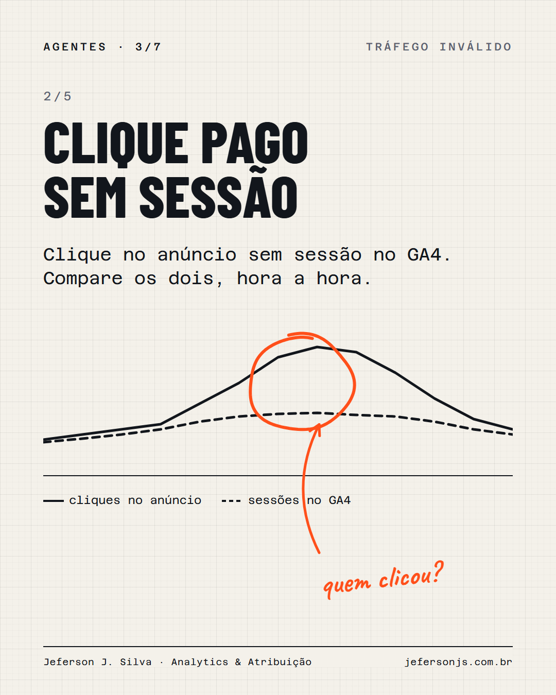
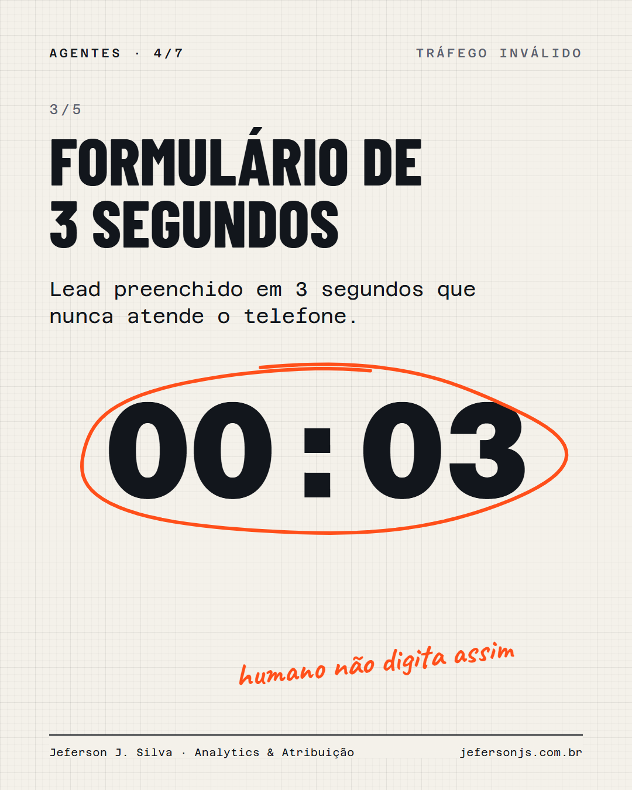
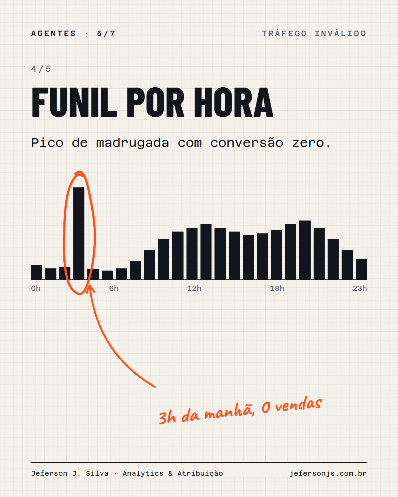
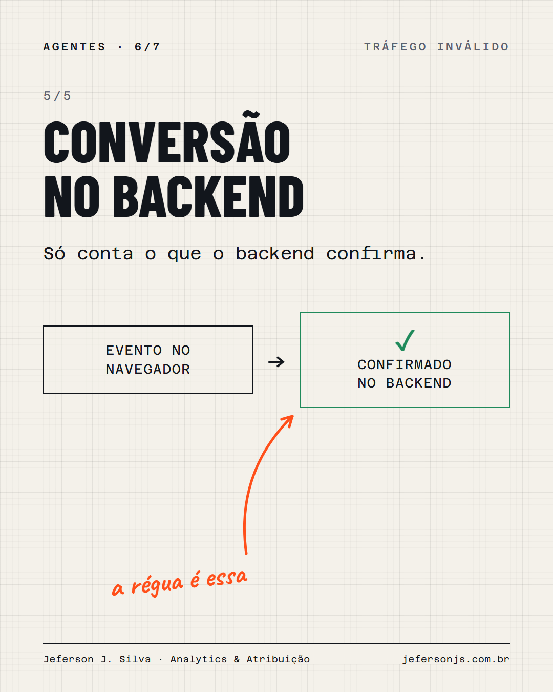

Em junho, o CEO da Cloudflare anunciou que o tráfego automatizado passou o humano: 57,5% das requisições HTML. Ele esperava isso só para o ano que vem.
Boa parte é agente de IA navegando em nome de alguém. Lendo página, comparando preço, preenchendo formulário.
Isso quebra o analytics de dois jeitos opostos:
- o agente que não roda JavaScript some do GA4. Você não vê o tráfego, mas paga por ele no servidor e às vezes no clique
- o agente que roda JavaScript entra como usuário. Sessão de 2 segundos, rejeição, lead que nunca atende
Taxa de rejeição, tempo na página e conversão foram desenhados pressupondo um humano do outro lado. Essa premissa ficou velha.
No carrossel, os 5 lugares onde eu procuro agente e bot hoje.
O tráfego humano virou minoria na internet. O seu painel já sabe disso?